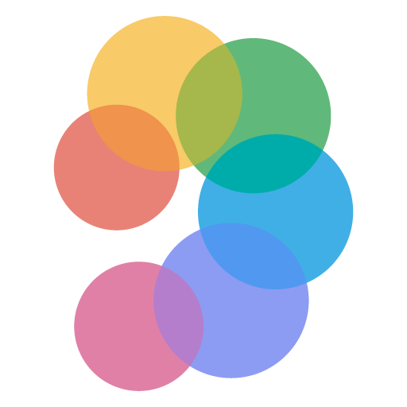
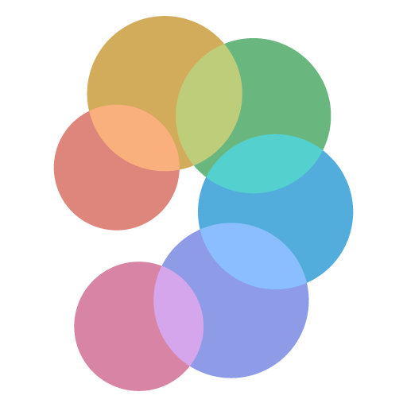

기준: 확정 로고(2026-10-30)의 색, 명세 MVP §11.2(사용자 모드: 화면을 보지 않고 쓴다, 화면 전체가 버튼 하나, 검은 배경·고대비 큰 글자, TalkBack 호환),
IMPROVE_SPEC §2(가슴 하네스, 걷는 동안 화면은 몸 쪽). 화면을 보는 때는 시작 전·멈춘 뒤·도와주는 사람·저시력 확인·시연이다. 크기는 dp(시안의 px = dp).
새 기능 표시는 지금 앱에 없는 기능이다.
1. 색 역할
색상은 로고 원에서 가져오고 밝기는 목표 대비를 넘는 가장 밝은(흰 배경)·어두운(검은 배경) 값으로 계산했다(OKLCH). 목표 7 · 4.5 · 3은 WCAG 2.1 기준(AAA 글자 · AA 글자 · 부품 경계),
15와 11은 저시력을 위해 직접 정한 여유다. 로고 자체의 파스텔 색은 흰 배경에서 대비가 1.5~3.1이라 뜻을 전하는 글자·그래픽에는 쓰지 않고 로고·장식에만 쓴다.
역할
라이트 (스플래시·설정)
다크 (스플래시·설정)
작동 화면 (늘 검정)
색상 출처 · 목표 대비
배경
#ffffff
#121212
#000000
다크 = Material 다크 표면, 작동 = 명세 §11.2 검은 배경(배터리)
글자
#25262d 15.1
#e4e6ed 15.0
#ffffff 21
로고 파랑 색상(아주 옅게) · 15
보조 글자
#575860 7.1
#9c9ea6 7.0
#b3b3b3 10.0
무채색에 가까움 · 7(작동 화면 10)
강조 (선택·버튼)
#007fb0 4.5
#4da8d7 7.1
—
로고 청록 · 4.5 / 7
부품 테두리
#93949b 3.0
#5f6167 3.0
#5f6167
무채색 · 3
안내 중
—
—
#439ecc 7.0
로고 청록 · 7
주의 (WARN · 확인 불가)
—
—
#eab431 11.1
로고 노랑(호박색) · 11
멈춤 (STOP)
—
—
#f26a5f 7.0
로고 빨강 · 7
주의와 멈춤은 색만으로 나누지 않는다(WCAG 1.4.1): 멈춤은 화살표를 굵은 고리로 두르고 글자 "멈춤", 주의는 고리 없이 글자 "주의". 적록 색약에서 노랑·빨강이 비슷해 보여도 모양과 글자로 구분된다.
2. 스플래시
Android 12 이상은 앱을 열 때 시스템 스플래시(배경색 + 가운데 아이콘 + 아래 브랜드 이미지)를 늘 보여 준다. 따로 스플래시 화면을 만들면 두 번 뜨므로 이 틀(SplashScreen API)에 맞춘다:
아이콘 배경 없이 288 dp 칸, 보이는 원 지름 192 dp(점선) 안에 로고, 아래 브랜드 200×80 dp에 글자 로고. 준비가 끝나면 바로 작동 화면으로 넘어간다.
9:41▲ ▮

HEARSPACE
라이트 · 기기가 라이트 모드일 때. 배경 #ffffff, 로고 라이트, 글자 로고 #25262d.
9:41▲ ▮

HEARSPACE
다크 · 기기가 다크 모드일 때(또는 설정의 테마). 배경 #121212, 로고 다크, 글자 로고 #e4e6ed.
TalkBack: (읽을 것 없음, 바로 작동 화면이 "HEARSPACE, 시작 전 …"을 읽는다)
3. 작동 화면 (사용자 모드)
늘 검은 배경(명세 §11.2, 배터리·저시력). 화면 전체가 버튼 하나: 두 번 탭 = 시작·일시정지·재개, 길게 누르기 = 종료(TalkBack에서는 두 번 탭 · 두 번 탭 후 유지).
위에 상태 한 줄(40 dp 굵게), 가운데에 그림, 아래에 조작 안내. 설정 단추는 시작 전에만 보인다(걷는 중 잘못 눌리지 않게). 상태 문구는 지금 앱 그대로다.
9:41▲ ▮
두 번 탭하여 시작
길게 누르기 · 종료
이 앱은 Google의 ARCore 기능을 포함합니다. ARCore 사용에는 Google 서비스 약관과 Google 개인정보처리방침의 최신 버전이 적용됩니다.
시작 전 · 로고와 할 일 한 가지. 오른쪽 위 설정 단추(56 dp, TalkBack에서 따로 잡힘). ARCore 고지는 지금처럼 아래에 둔다.
TalkBack: "HEARSPACE, 시작 전. (처음에만 ARCore 고지.) 두 번 탭하여 시작, 길게 눌러 종료" / 단추: "설정"
9:41▲ ▮
준비 중
주변을 확인하고 있어요
두 번 탭 · 일시정지 길게 누르기 · 종료
준비 중 (추적 준비, 대기음) · 로고의 여섯 색이 차례로 켜지는 고리. 움직임은 상태가 살아 있음만 알리고 뜻은 글자가 전한다.
TalkBack: "HEARSPACE, 준비 중. 두 번 탭하여 일시정지 또는 재개, 길게 눌러 종료"
9:41▲ ▮
바닥 확인 중
지금은 물체를 볼 수 없어요
두 번 탭 · 일시정지 길게 누르기 · 종료
바닥 확인 중 (지도 상태 DEGRADED, 대기음과 함께) · 주의 색 + 세모. 소리가 없어도 안전하다는 뜻이 아님을 글자로 밝힌다.
TalkBack: "HEARSPACE, 바닥 확인 중. …"
9:41▲ ▮
안내 중
두 번 탭 · 일시정지 길게 누르기 · 종료
안내 중, 가까운 신호 없음 (모든 음원 SILENT) · 가운데를 비운다. "장애물 없음"이나 초록 표시를 하지 않는다(무음 ≠ 안전, CLAUDE.md 원칙).
청록 점이 숨 쉬듯 켜져 앱이 동작 중임만 보인다.
9:41▲ ▮
안내 중
주의
두 번 탭 · 일시정지 길게 누르기 · 종료
안내 중, 주의 (WARN) · 가장 가까운 장애물 방향(여기서는 오른쪽 앞 35°)을 굵은 화살표로. 고리 없음 + 글자 "주의".
9:41▲ ▮
안내 중
멈춤
두 번 탭 · 일시정지 길게 누르기 · 종료
안내 중, 멈춤 (STOP) · 같은 화살표를 굵은 고리로 두르고 글자 "멈춤"을 더 크게. 색(빨강)·모양(고리)·글자 세 겹으로 주의와 구분.
9:41▲ ▮
일시정지
소리 안내를 멈췄어요
두 번 탭 · 재개 길게 누르기 · 종료
일시정지 · 흰 두 막대. 조작 안내가 "재개"로 바뀐다.
TalkBack: "HEARSPACE, 일시정지. 두 번 탭하여 일시정지 또는 재개, 길게 눌러 종료"
9:41▲ ▮
안내를 멈췄어요
소리 출력이 멈춰 안내를 멈췄습니다
두 번 탭 · 다시 시작 길게 누르기 · 종료
멈춤 알림 (시작 실패·소리 출력 멈춤·카메라 권한 없음·화면을 떠남) · 긴 진동과 함께. 제목은 안내 중에 멈춘 경우 "안내를 멈췄어요", 시작하지 못한 경우 "시작하지 못했어요". 사유 문장은 지금 앱 그대로. 장애물 STOP과 헷갈리지 않게 빨강을 쓰지 않는다. 다시 시작 전이므로 설정 단추가 보인다.
4. 설정
시작 전 화면의 설정 단추로 연다. 기기 테마(또는 아래 테마 설정)를 따른다. 누르는 줄 높이 56 dp 이상(터치 최소 48 dp), 글자 18 dp. 넣지 않은 것과 이유:
진동 끄기(소리가 끊겼을 때 알리는 길이 진동뿐이라 — 안전 신호, M40), 앱 안 음량(너무 낮추면 안내가 안 들림 — 기기 음량 버튼만),
안내 거리·민감도(명세의 가설 값, 개발 모드 실험 패널 소관), 개발 모드(명세 §11.3대로 별도 런처 아이콘).
9:41▲ ▮
설정
사용 방법
사용 방법 듣기
두 번 탭·길게 누르기와 소리 뜻
소리
헤드폰 확인
왼쪽·오른쪽·앞·뒤에서 소리가 나요 음량은 기기의 음량 버튼으로 조절해요
화면 테마 · 작동 화면은 늘 검은 화면
기기 설정 따르기
밝게
어둡게
정보
ARCore 고지
오픈소스 라이선스
버전
x.y.z
라이트 · 강조 #007fb0(선택된 항목·소제목), 테두리 #93949b(선택 안 된 동그라미).
9:41▲ ▮
설정
사용 방법
사용 방법 듣기
두 번 탭·길게 누르기와 소리 뜻
소리
헤드폰 확인
왼쪽·오른쪽·앞·뒤에서 소리가 나요 음량은 기기의 음량 버튼으로 조절해요
화면 테마 · 작동 화면은 늘 검은 화면
기기 설정 따르기
밝게
어둡게
정보
ARCore 고지
오픈소스 라이선스
버전
x.y.z
다크 · 강조 #4da8d7, 테두리 #5f6167.항목별 상태
· 사용 방법 듣기 새 기능 TalkBack·시스템 음성으로 조작과 소리 뜻(대기음·준비 완료음·주의·멈춤)을 읽어 준다.
· 헤드폰 확인 새 기능 개발 모드의 오디오 시험(AudioTestActivity)을 사용자용으로 줄인 것.
· 화면 테마 새 기능 스플래시·설정에만 적용.
· ARCore 고지: 지금 작동 화면 아래 문구와 같은 글을 따로 연다.
· 오픈소스 라이선스 새 기능 docs/LICENSES.md의 내용(HRTF 등)을 앱 안에서 보여 준다.
· 기기 설정 덮어쓰기가 켜져 있으면 "정보" 맨 위에 그 사실을 한 줄로 보인다(지금 작동 화면 문구와 같음).
TalkBack: 소제목은 제목(heading)으로 표시해 제목 단위로 건너뛸 수 있게, 테마는 단일 선택 묶음("3개 중 1번째, 선택됨").